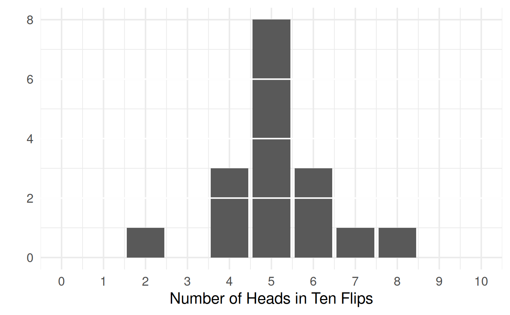
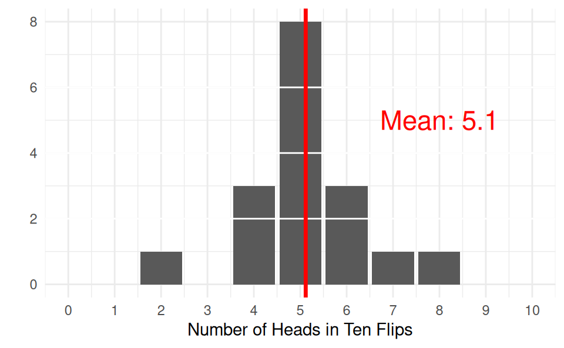
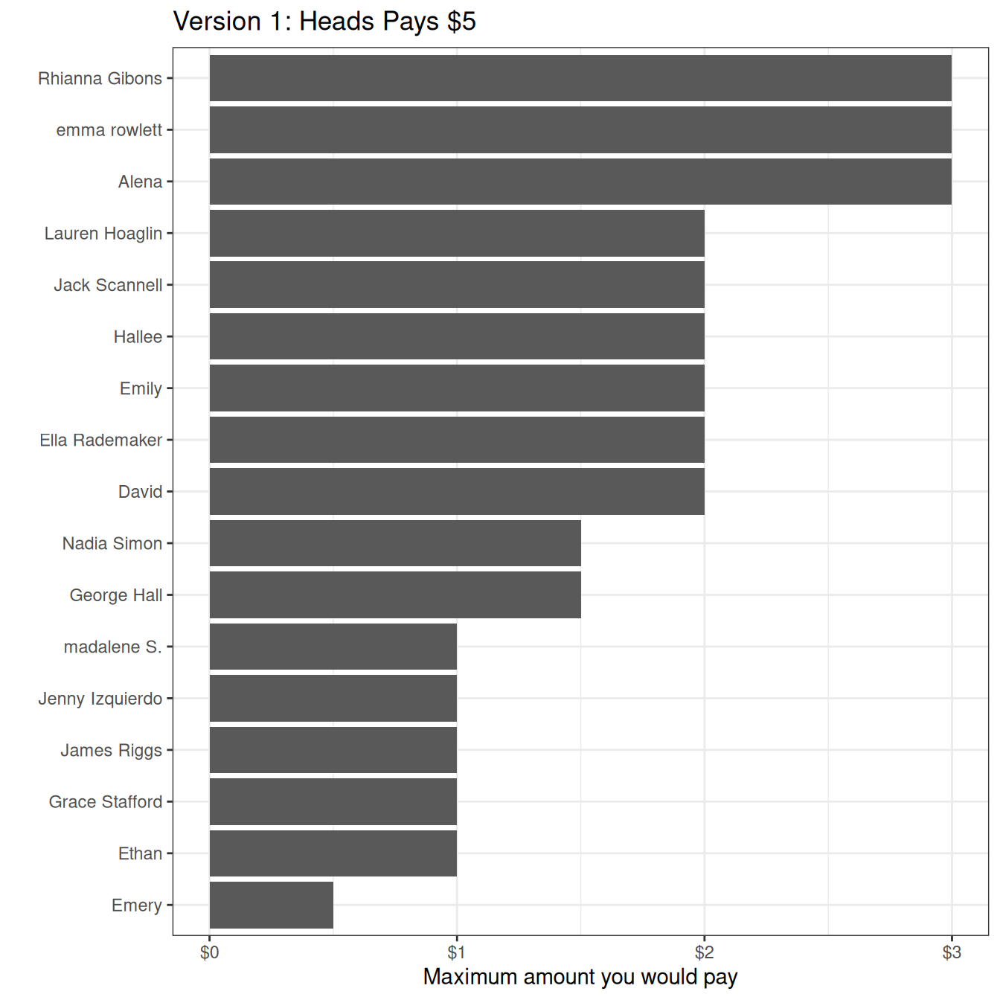
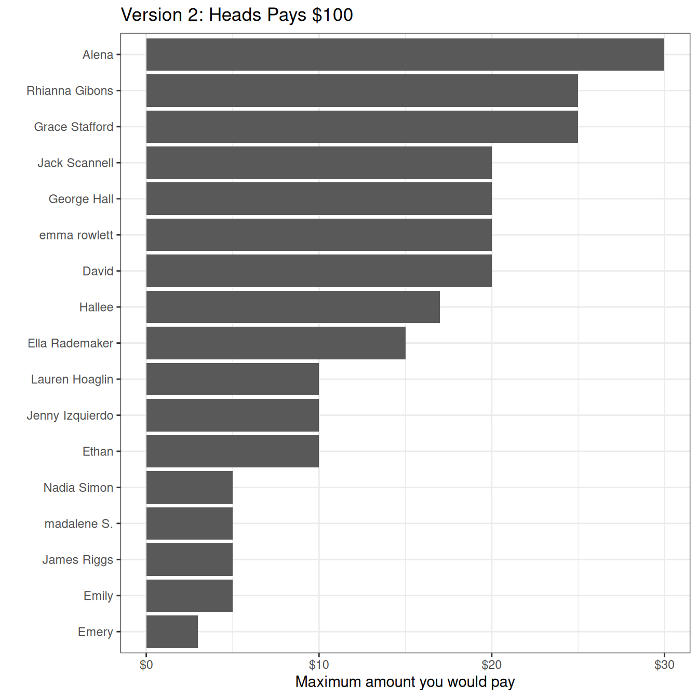
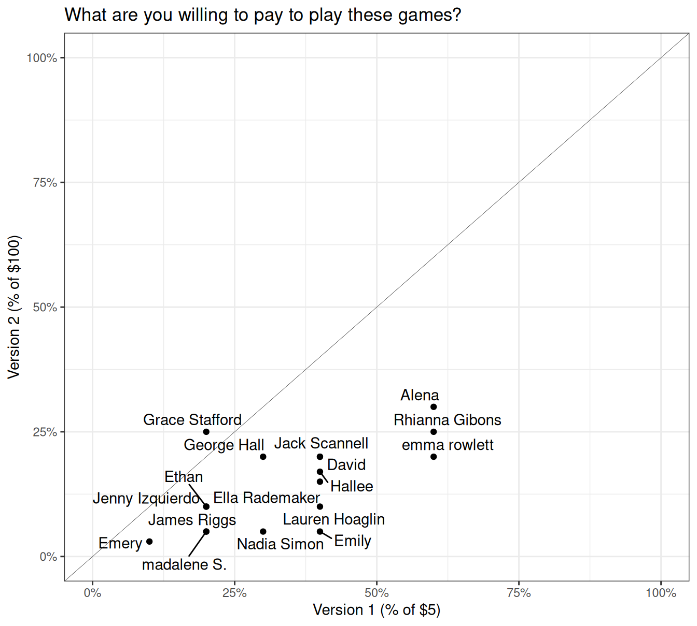
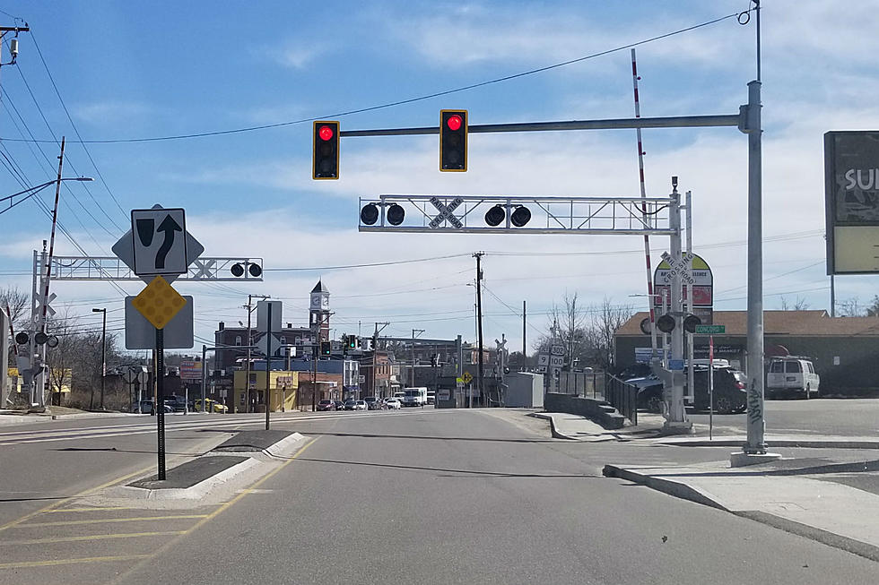

Today’s Agenda
Analyzing Complex Problems (I)
- Different risk profiles complicate problem-solving
Justin Leinaweaver (Spring 2026)
Analyzing Stakeholders
Risk aversion (or risk acceptance)
Temporal discounting and uncertainty
Collective action problems and free-riding





Let’s play a game!
Flip a fair coin ONE time
Heads pays you $5
Tails pays you nothing
Let’s play a game!
Flip a fair coin ONE time
Heads pays you $100
Tails pays you nothing





Ehrlich & Ehrlich (2008)
Too Many People, Too Much Consumption
Therefore, a combination of overpopulation and overconsumption has us on track for disaster
Ehrlich & Ehrlich (2008)
We are rapidly depleting the natural capital of the Earth
Damage = Population x Consumption x Technology
Population control is controversial
Overconsumption is complex and difficult to reduce
Technology improvements cannot save us
Therefore, a combination of overpopulation and overconsumption has us on track for disaster
Simon (1993)
Population Growth Is Not Bad for Humanity
Therefore, “the energetic effort of humankind will prevail in the future” over whatever environmental challenges we face.
Simon (1993)
Overpopulation hysteria is costly to society
Trusting markets means trusting that shortages produce innovation
The only limit to innovation is a shortage of people!
More people = Larger stock of human knowledge
Therefore, “the energetic effort of humankind will prevail in the future” over whatever environmental challenges we face.
Engaging Productively as Problem-Solvers
Describe the problem facing our community
Investigate the relevant stakeholders
Frame the problem for the stakeholders
Design a policy to address the problem
Take action to push the plan forward!
Different risk profiles complicate problem-solving
In what specific ways do the stakeholders relevant to your problem vary in terms of their risk profiles?
- How does variation in levels of risk aversion or risk acceptance complicate addressing your problem?
For Next Class
River Clean-up (9:30a - 11:30a)
Meet at the pavilion at Silver Springs Park (1100 N. Hampton Ave)
Wear appropriate shoes (ideally ones they don’t mind getting a little wet) and bring a reusable water bottle
You MUST complete the waiver and bring it
Old slides
For Next Class
Analyzing Stakeholders: The Role of Uncertainty
Pindyck (2007)
Gettleman (2015)
Hart (2024)